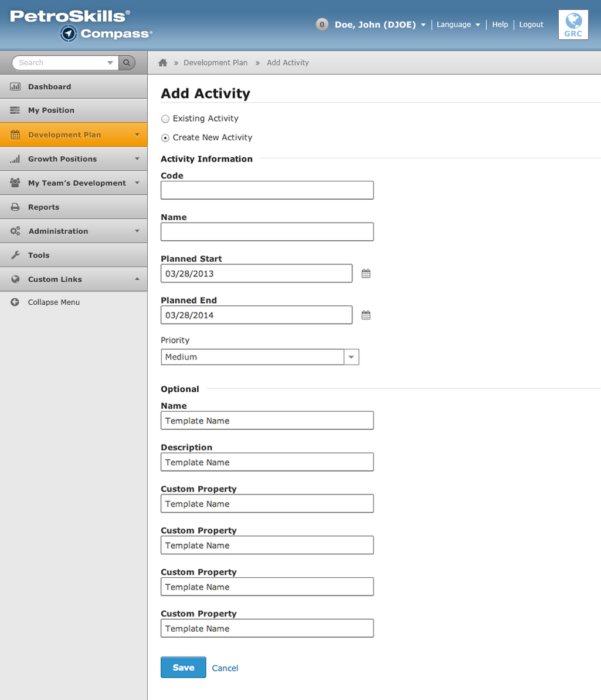

A showcase on how the design is applied throughout the user-interface.
When a user clicks on the "Add Activity" button from their Development Plan page, they will be redirected to a page (shown below) that lets the user to add an existing activity or a new activity to their plan.
Note: Previously, the "Add Activity" area would show up in a modal/pop-up window. It is now being change to a page redirect because this area shows more data than before and would not fit in a modal/pop-up window.
When the "Add Activity" page is loaded, the "Existing Activity" is chosen as a default. The user has to modify two settings:
When the user selects the "Create New Activity" radio button, the page will load a new tab that displays the information shown below. The user needs to input all information in order to proceed with this step.
